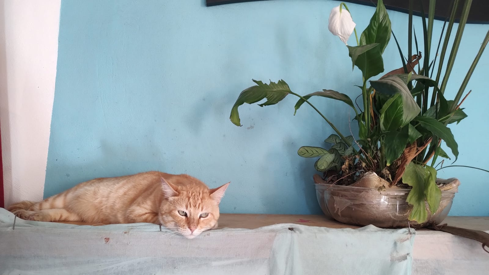

Mi nombre es Kiwi 🥝
Si así como lo escuchas me llamo Kiwi que me define porque soy muy peludito por fuera y dulce por dentro. Soy un gatito muy cariño y amoroso, pero también me gusta a veces mi espacio personal, me gusta jugar trepando los arboles o con mi hermana cuando corremos entre nosotros, me recogieron de la calle cuando era un bebé porque mi mamá era una gatita callejera, estelizaron a mi mamá para que no tuviera más hermanitos y yo y mi hermana estuvimos en un hogar lleno de mucho amor mientras crecia para poderme dar en adopción y hoy estoy listo para seguir jugando y creciendo en un ambiente de mucho amor con mi nueva familia.


.JPG)

Mi nombre es Amarillo
Mi nombre no es por mi color si no porque soy tan calido como el sol, soy muy tierno y cariñoso, un poco loco y deubicado a veces porque me gusta mucho jugar pero mi amor compensa todo lo demás, tuve un vida dificil mis anteriores dueños me rompieron todos mis dientes a golpes, lo bueno es que huí de esa casa y alguien con un buen corazón comenzo a darme comida y decidí ir diario a pedir comida para ver si me adopaban y funciono, pero ahora es momento de buscar un nuevo hogar ya que solo era temporal en lo que encontraba una familia para llenar de amor. Espero poder encontrarla y dar mucho amor.
